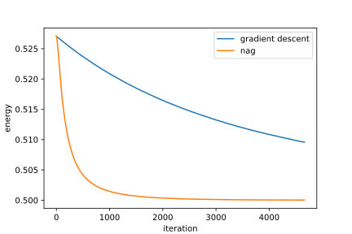

|
Home | Libraries | People | FAQ | More |


#include <boost/math/optimization/nesterov.hpp> namespace boost { namespace math { namespace optimization { namespace rdiff = boost::math::differentiation::reverse_mode; /** * @brief The nesterov_accelerated_gradient class * * https://jlmelville.github.io/mize/nesterov.html */ template<typename ArgumentContainer, typename RealType, class Objective, class InitializationPolicy, class ObjectiveEvalPolicy, class GradEvalPolicy> class nesterov_accelerated_gradient : public abstract_optimizer< ArgumentContainer, RealType, Objective, InitializationPolicy, ObjectiveEvalPolicy, GradEvalPolicy, nesterov_update_policy<RealType>, nesterov_accelerated_gradient<ArgumentContainer, RealType, Objective, InitializationPolicy, ObjectiveEvalPolicy, GradEvalPolicy>> { public: nesterov_accelerated_gradient(Objective&& objective, ArgumentContainer& x, InitializationPolicy&& ip, ObjectiveEvalPolicy&& oep, GradEvalPolicy&& gep, nesterov_update_policy<RealType>&& up); void step(); }; /* Convenience overloads */ /* make nesterov acelerated gradient descent by providing ** objective function ** variables to optimize over ** Optionally * - lr: learning rate / step size (typical: 1e-4 .. 1e-1 depending on scaling) * - mu: momentum coefficient in [0, 1) (typical: 0.8 .. 0.99) */ template<class Objective, typename ArgumentContainer, typename RealType> auto make_nag(Objective&& obj, ArgumentContainer& x, RealType lr = RealType{ 0.01 }, RealType mu = RealType{ 0.95 }); /* provide initialization policy * lr, and mu no longer optional */ template<class Objective, typename ArgumentContainer, typename RealType, class InitializationPolicy> auto make_nag(Objective&& obj, ArgumentContainer& x, RealType lr, RealType mu, InitializationPolicy&& ip); /* provide * initilaization policy * objective evaluation policy * gradient evaluation policy */ template<typename ArgumentContainer, typename RealType, class Objective, class InitializationPolicy, class ObjectiveEvalPolicy, class GradEvalPolicy> auto make_nag(Objective&& obj, ArgumentContainer& x, RealType lr, RealType mu, InitializationPolicy&& ip, ObjectiveEvalPolicy&& oep, GradEvalPolicy&& gep); } // namespace optimization } // namespace math } // namespace boost
Nesterov accelerated gradient (NAG) is a first-order optimizer that augments gradient descent with a momentum term and evaluates the gradient at a "lookahead" point. In practice this often improves convergence speed compared to vanilla gradient descent, especially in narrow valleys and ill-conditioned problems.
NAG maintains a "velocity" vector v (same shape as x). At iteration k it performs:
v = mu * v - lr * g; x += -mu * v_prev + (1 + mu) *v
where:
lr is the learning rate / step size
mu is the momentum coefficient (typically close to 1)
Setting mu = 0 reduces NAG to standard gradient descent.
Objective&&
obj : objective function to
minimize.
ArgumentContainer&
x : variables to optimize over.
Updated in place.
RealType lr
: learning rate. Larger values take larger steps (faster but potentially
unsable). Smaller values are more stable but converge more slowly.
RealType mu
: momentum coefficient in [0,1). Higher values, e.g. 0.9 to 0.99, typically
accelerate convergence but may require a smaller lr
InitializationPolicy&& ip
: initialization policy for the optimizer state and variables. For NAG,
this also initializes the internal momentum/velocity state. By default
the optimizer uses the same initializer as gradient descent and initializes
velocity to zero.
ObjectiveEvalPolicy&&
oep : objective evaluation
policy. By default reverse_mode_function_eval_policy<RealType>
GradEvalPolicy&&
gep : gradient evaluation policy.
By default reverse_mode_gradient_evaluation_policy<RealType>
rvar,
the objective should be written in terms of AD variables so gradients
can be obtained automatically by the default gradient evaluation policy.
mu
= 0.9
or 0.95; if the objective
oscillates or diverges, reduce lr
(or slightly reduce mu).
#include <boost/math/differentiation/autodiff_reverse.hpp> #include <boost/math/optimization/gradient_descent.hpp> #include <boost/math/optimization/minimizer.hpp> #include <cmath> #include <fstream> #include <iostream> #include <random> #include <string> namespace rdiff = boost::math::differentiation::reverse_mode; namespace bopt = boost::math::optimization; double random_double(double min = 0.0, double max = 1.0) { static thread_local std::mt19937 rng{std::random_device{}()}; std::uniform_real_distribution<double> dist(min, max); return dist(rng); } template<typename S> struct vec3 { /** * @brief R^3 coordinates of particle on Thomson Sphere */ S x, y, z; }; template<class S> static inline vec3<S> sph_to_xyz(const S& theta, const S& phi) { /** * convenience overload to convert from [theta,phi] -> x, y, z */ return {sin(theta) * cos(phi), sin(theta) * sin(phi), cos(theta)}; } template<typename T> T thomson_energy(std::vector<T>& r) { /* inverse square law */ const size_t N = r.size() / 2; const T tiny = T(1e-12); T E = 0; for (size_t i = 0; i < N; ++i) { const T& theta_i = r[2 * i + 0]; const T& phi_i = r[2 * i + 1]; auto ri = sph_to_xyz(theta_i, phi_i); for (size_t j = i + 1; j < N; ++j) { const T& theta_j = r[2 * j + 0]; const T& phi_j = r[2 * j + 1]; auto rj = sph_to_xyz(theta_j, phi_j); T dx = ri.x - rj.x; T dy = ri.y - rj.y; T dz = ri.z - rj.z; T d2 = dx * dx + dy * dy + dz * dz + tiny; E += 1.0 / sqrt(d2); } } return E; } template<class T> std::vector<rdiff::rvar<T, 1>> init_theta_phi_uniform(size_t N, unsigned seed = 12345) { const T pi = T(3.1415926535897932384626433832795); std::mt19937 rng(seed); std::uniform_real_distribution<T> unif01(T(0), T(1)); std::uniform_real_distribution<T> unifm11(T(-1), T(1)); std::vector<rdiff::rvar<T, 1>> u; u.reserve(2 * N); for (size_t i = 0; i < N; ++i) { T z = unifm11(rng); T phi = (T(2) * pi) * unif01(rng) - pi; T theta = std::acos(z); u.emplace_back(theta); u.emplace_back(phi); } return u; } int main(int argc, char* argv[]) { if (argc != 2) { std::cerr << "Usage: " << argv[0] << " <N>\n"; return 1; } const int N = std::stoi(argv[1]); const double lr = 1e-3; const double mu = 0.95; auto u_ad = init_theta_phi_uniform<double>(N); auto nesterov_opt = bopt::make_nag(&thomson_energy<rdiff::rvar<double, 1>>, u_ad, lr, mu); // filenames std::string pos_filename = "thomson_" + std::to_string(N) + ".csv"; std::string energy_filename = "nesterov_energy_" + std::to_string(N) + ".csv"; std::ofstream pos_out(pos_filename); std::ofstream energy_out(energy_filename); energy_out << "step,energy\n"; auto result = minimize(nesterov_opt); for (int pi = 0; pi < N; ++pi) { double theta = u_ad[2 * pi + 0].item(); double phi = u_ad[2 * pi + 1].item(); auto r = sph_to_xyz(theta, phi); pos_out << pi << "," << r.x << "," << r.y << "," << r.z << "\n"; } auto E = nesterov_opt.objective_value(); int i = 0; for(auto& obj_hist : result.objective_history) { energy_out << i << "," << obj_hist << "\n"; ++i; } energy_out << "," << E << "\n"; pos_out.close(); energy_out.close(); return 0; }
The nesterov version of this problem converges much faster than regular gradient
descent, in only 4663 iterations
with default parameters, vs the 93799
iterations required by gradient descent.
